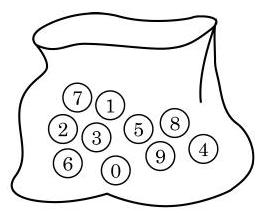
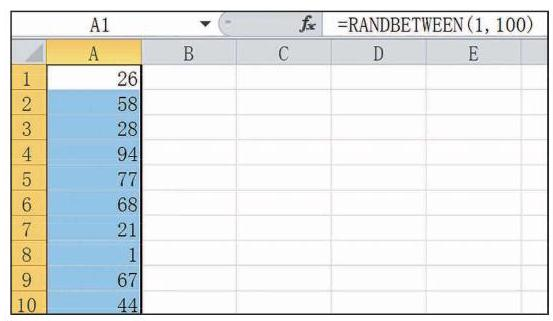

例题 1
例 1 在 13.2 节中, 厂家为考察某一新型 LED 灯管的使用寿命, 从首批生产的 200 根灯管中抽取 10 根灯管进行加速寿命试验. 试用随机数表法进行抽取.
学生阅读版 / 沪教版高中数学
必修第三册
第13章统计 · 保留教材主线与原题
教材与正式教参整合
在统计活动中, 人们常常通过样本来研究总体. 那么, 如何进行抽样才比较合理呢?
从河里取出一杯水, 就可以检测出这一段河道的水质情况. 但如果是从远离工厂排污口的位置取水，那么检测出的结果未必能代表这家工厂对这一段河道的污染情况. 科学的抽样方法必须使样本具有代表性. 样本的代表性是指选取的样本能客观地反映总体的情况, 没有人为的主观偏向.
下面介绍两种常用的抽样方法:简单随机抽样与分层随机抽样.
假定从共有 24 盒的一箱牛奶中抽取 4 盒进行检测, 可以按照如下方法抽取样本:
在日常生活中抽签法应用很广泛. 比如, 班级元旦晚会上的抽奖活动就常常采用抽签法:首先将班上每一名学生的学号或者姓名写在相同的奖券上，全部投入摇奖箱并混合均匀后，即可抽取当晚的幸运儿了.
抽签法简单易行, 适用于总体容量不大的情形. 但当总体容量很大时, 制作号签比较费时, 且不易混合均匀, 这时我们可以利用随机数表法. 随机数表 (见附录) 就是一种现成的号签, 它是由一连串的 0 ~9 之间的数字构成的, 且满足以下两个条件: (1) 对表中任何一个给定位置的数字,其为 中任何一个数字的概率都相等; (2)不同位置数字的取值是相互独立的.
我们只要先把总体中的个体逐个编号, 然后按照某种事先确定的规则直接从随机数表 (或其他工具产生的随机数) 中取一定量的随机数, 这些随机数所对应的个体即组成一个样本. 我们称这种抽样方法为随机数法.
请一位学生把标有数字 0 ~ 9 的十个小球放在一个不透明的袋子里搅拌均匀 (图 13-3-1)，随机抽取一个小球，记下数字后放回袋子里搅拌均匀再抽取. 依此类推, 即得到了一串数字, 为了方便读取, 将每 8 个数字组成一组, 每 6 组组成一行. 这样就得到了一张随机数表.

图 13-3-1
例 1 在 13.2 节中, 厂家为考察某一新型 LED 灯管的使用寿命, 从首批生产的 200 根灯管中抽取 10 根灯管进行加速寿命试验. 试用随机数表法进行抽取.
例 2 下列抽取样本的方法是简单随机抽样吗? 判断并简要说明理由.
(1)某公司年会时将所有员工的姓名写成纸条放进抽奖箱， 混合均匀后抽取 10 名员工进行奖励;
(2)课堂上，教师抽取班上学号尾号为 0 的学生回答问题.
利用计算机中的电子表格办公软件可以方便地产生所需要的随机数. 在空白单元格内输入随机函数 “ = RANDBETWEEN ” ，运行一次，就能得到一个 之间的随机整数, 利用软件的自动填充功能, 拖拽该单元格的填充柄, 便可以得到多个 之间的随机整数. 图 13-3-2 即是通过输入随机函数“=RANDBETWEEN(1,100)”所产生的 1 ~ 100 之间的随机整数.

图 13-3-2
利用计算器也可以帮助我们生成随机数. 一般计算器内部都有一个随机函数 “RAND”，它可以产生 0~1 的随机数.
注意，利用计算机或计算器产生的随机数实际上是伪随机数, 因为它们是由确定的过程所产生的, 尽管这个过程可能很复杂.
(1)某在线商城在网站首页发布问卷调查，调查登录该网站的客户对于该商城的满意度, 访问该网站者可以自愿点击填写;
(2)检验员抽检一箱零件，每次检验时抽取 1 个零件，检验后放回箱子里，再进行第二次检验, 一共检验了 10 次.
某高中为了解高一年级新生的身高情况，计划抽取 50 名学生测量身高. 由于不同性别的学生身高差异较大, 人数也可能不一样, 因此不适合用前面介绍的简单随机抽样. 我们希望抽取的样本中男女生的比例与全部高一年级新生的男女比例大致相同, 这样得到的样本才具有代表性. 这就要求在抽样的过程中, 不仅要使得总体中每个个体被抽到的可能性相同, 而且应注意总体中个体的某些分类属性, 使得所抽取的样本能更明确地反映出总体的特征.
常用的分层抽样的方法如下: 先将容量为 的总体按照要求分成 层,每层的个体数分别记为 ,在每层中分别随机抽取 个个体组成容量为 的样本, 使得
显然,这里每个个体被抽到的概率均为 .
例 3 某高中一年级共有学生 425 名, 其中男生 204 名, 女生 221 名, 为了解该校高一年级学生的身高情况, 现从中抽取 50 名学生测量身高. 问:应当如何抽取？男女生各要抽取多少名?
例 4 下列问题中, 采用怎样的抽样方法较为合理?
(1)某餐厅从一桌正在就餐的 12 名客人中抽取 2 名客人进行服务满意度调查；
(2)植物根据植株的高度及分枝部位等可以分为乔木、灌木和草本三大类. 某植物园需要对其园中的不同植物的干重(烘干后测定的质量)进行调查.
从本校学生中按照性别和年级进行分层抽样, 抽取一个容量为 60 的样本, 调查学生的平均每周运动时间 (单位: , 保留一位小数), 并记录在表 13-1 中.
在例 3 中,若 、 不是整数,可以取其近似值. 如 , ,此时既可以取男生为 26 人，女生为 24 人；也可以取男生为 27 人，女生为 23 人.
表 13-1
| 学生编号 | 时间/h | 学生编号 | 时间/h | 学生编号 | 时间/h | 学生编号 | 时间/h |
(1)将每棵树按 1 ~ 1 200 进行编号，并从这 1200 个号码中随机抽取 100 个号码，得到这 100 个号码对应的 100 棵苹果树;
(2)从三个品种的苹果树中分别随机抽取 30 棵、20 棵、10 棵.
A. 某社团为调查本校学生的环保知识水平，向在图书馆某楼层自习的所有学生发放问卷，隔 5 分钟后回收；
B. 某次科普讲座之前，主持人抽取座位尾号为 1 的听众进行提问；
C. 一车间主任从堆放的 100 件产品中抽取了摆放在最上面的 10 件产品进行检查;
D. 销售部经理将一个放有部门所有员工工号牌的箱子均匀摇晃后, 从中抽取 5 个工号牌.
张海超 孙瀚文 洪振国 赵智宇 胡萍萍
李伊一 冯 杰 王小蕾 汪 晓 李 伟
陆昊然 江 晨 张 燕 吴运杰 周 越
陈景瑶 赵萱萱 李 珍
某校为了解高二年级学生对于某知识点的掌握情况，在一次数学考试后，按照 1:30的比例抽取一组样本试卷进行分析. 该校高二年级有 12 个班，共 540 人，每班人数如下表所示. 请利用随机数表法进行抽取, 并写出过程.
| 班级 | 一班 | 二班 | 三班 | 四班 | 五班 | 六班 |
| 人数 | 43 | 47 | 47 | 43 | 47 | 43 |
| 班级 | 七班 | 八班 | 九班 | 十班 | 十一班 | 十二班 |
| 人数 | 44 | 47 | 46 | 43 | 47 | 43 |